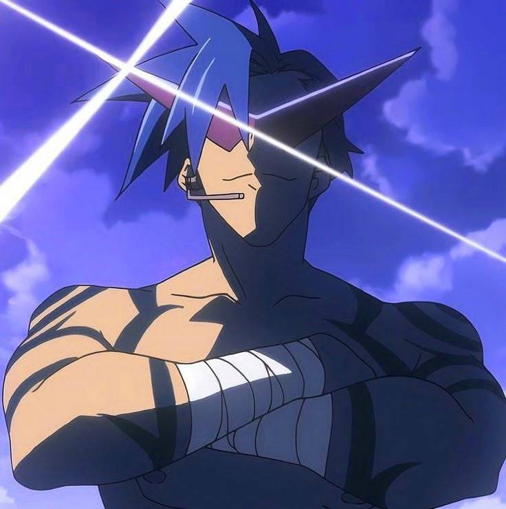

เหตุผลที่อยากเรียน Full stack web development
เพราะอยากพัฒนาความสามารถด้านการเขียนโปรแกรมและลองทำอะไรใหม่
ความคาดหวังต่อวิชานี้
เกรด4และมีผลงานใส่พอร์ต
อะไรจุดอ่อน ที่ตนเองต้องพัฒนาเกี่ยวกับทักษะ Programming และ แนวทางการพัฒนา
ความขี้เกียจคือศัตรูตัวหลักในการเรียน ต้องคอยขยับตัวเองและผลักดันตัวเองให้พัฒนาไปข้างหน้า และมี พี่คามินะเป็นแรงบันดาลใจในการพัฒนาตัวเองให้เก่งขึ้น
เว็บไซต์ที่ชอบ